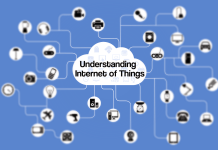

Understanding Internet of Things
Everyone is eyeing the next big thing after the .com boom which will make riches. World has never being the same after advent of the internet. Investment gurus and statisticians may have many proposals to make but one thing is for sure, the next big move which will shape the century will depend on internet and embedded technology. That is, in other words internet of things definition is what interests major players now. What we do, how we do and when we do is never going to be the same when the physical environment around us gets lively and starts communicating.
The Internet of Things (IoT) is here and is becoming an increasing topic of interest among technology giants and business communities. The hype is not baseless as there are enough evidences to support the success of “Internet of Things” in the coming years. According to a report by Gartner there will be 30% increase in the number of connected devices in 2016 as compared to 2015 with 6.4 billion IoT devices entering the realm of internet of things. The number is further expected to increase to 26 billion by 2020.
BY 2020 IT IS EXPECTED THAT 26 BILLION DEVICES WILL BE PART OF INTERNET OF THINGS.
So one might simply ask “What is Internet of Things” and how it is going to impact our lives and career opportunities. There is a lot of complicated technology and terminologies at work in the IoT world but here I will try to keep things simple to explain the concept of Internet of Things easily.
Internet of Things Definition
IoT is simply the network of interconnected things/devices which are embedded with sensors, software, network connectivity and necessary electronics that enables them to collect and exchange data making them responsive.
More than a concept Internet of Things is essentially an architectural framework which allows integration and data exchange between the physical world and computer systems over existing network infrastructure.
Important Internet of Things Components
Many people mistakenly think of IoT as an independent technology. Interestingly internet of things is being enabled by the presence of other independent technologies which make fundamental components of IoT.
The fundamental components that make internet of things a reality are:
- Hardware
- Making physical objects responsive and giving them capability to retrieve data and respond to instructions
- Software
- Enabling the data collection, storage, processing, manipulating and instructing
- Communication Infrastructure
- Most important of all is the communication infrastructure which consists of protocols and technologies which enable two physical objects to exchange data
Why Internet of Things/IoT will be successful in the coming years?
As the telecommunication sector is becoming more extensive and efficient, broadband internet is widely available. With technological advancement it is now much cheaper to produce necessary sensors with built-in wifi capabilities making connecting devices less costly.
Most important, the smart phone usage has surpassed all the predicted limits and telecommunication sector is already working on its toes to keep their customers satisfied by improving their infrastructure. As IoT devices need no separate communication than the existing one building IoT tech is very cheap and highly achievable.
Internet of Things Infographic
Understanding Internet of ThingsThe Impact of Internet of Things on You
To put things simply any object that can be connected will be connected by the IoT. This might not make sense for you on the forefront but it is of high value. With interconnected devices you can better arrange your life and be more productive, safer, smarter and informed than ever before.
For instance how easy it will be for you to start your day if your alarm clock is not only able to wake you up but also able to communicate with your brewer to inform it that you are awake at the same time notifies your geezer to start water heating. Or you wearable wrist health band keeps track of your vitals to inform you when you are most productive during the day. These are just few examples but applications of internet of things are numerous.
On large scale transportation, healthcare, defence, environment monitoring, manufacturing and every other field you can imagine of can be benefited from IoT. It is very to conceive the whole application domain of internet of things at the moment but you can clearly understand why it is such an interesting and hot topic at the moment.
The Challenges of Internet of Things
Like any other technology there are challenges which make the viability of IoT doubtful. Security is one of the major concerns of experts who believe virtually endless connected devices and information sharing can severely compromise one’s security and well being. Unlike other hacking episodes which compromise online data and privacy with IoT devices can open gateway for an entire network to be hacked.
One such flaw is well presented by Andy Greenberg on wired.com where he works with hackers to remotely kill his Jeep on the highway. Another very relevant example is provided by W. David Stephenson in his post Amazon Echo: is it the smart home Trojan Horse?. You can estimate the amount of personal and private data the connected devices will be producing once they are on a network. The major challenge for IoT tech companies is to figure out how the communication in the internet of things realm can be made truly secure.
What to Expect
ANY OBJECT THAT CAN BE CONNECTED WILL BE CONNECTED BY THE IOT.
Internet of Things is truly a game changing concept and whatever challenges may be present, there will be rapid growth in the number of connected devices. There is still need for us to understand concepts of IoT and the flaws that are underlying. As more and more devices start to connect the need will force technocrats to come up with most advanced concepts and methods to ensure growth of this technology.
By the time what we can do best is to educate ourselves on various IoT technologies and keep experimenting with new stuff.